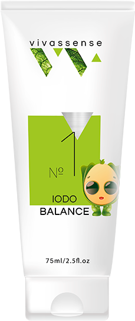

093 388 88 88
English
био пасты
образ жизни здорового человека
Швейцарская лаборатория
Получить консультацию
Пройти диагностику
как работают био пасты vivassense
Серия биопаст разработанна командой ученых и фармацевтов мира для укрепления и восстановления жизненных сил организма.
Каждый продукт в своей основе имеет 9 витаминов, 9 минеральных веществ и 15 аминокислот. То Что необходимо человеку в сутки

Пастообразная консистенция, благодаря которой происходит моментальное всасывание и усвоение продукта
Природное восстановление здоровья организма
выбери свой продукт здоровья
Смотреть все продукты

Био-пасты для детей
от 3-х лет
Смотреть все продукты
Пройти диагностику или терапию организма
Получить консультацию
Пройти диагностику